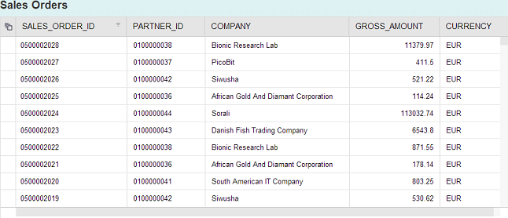
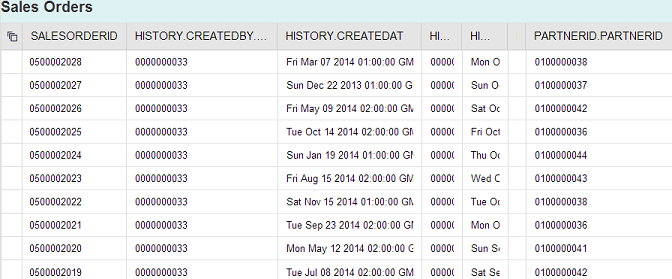

Tutorial: Consume an OData Service from SAPUI5
An OData service can be used to provide the data required for display in an SAPUI5 application.
Prerequisites
- You have installed the SAPUI5 tools included in the delivery unit (DU) SAPUI5_1.
- You have installed the SHINE delivery unit (DU); this DU contains the views (sap.hana.democontent.epm.models:: AN_SALES_OVERVIEW_WO_CURR_CONV and sap.hana.democontent.epm.models::AT_BUYER) specified in the OData service (salesOrders.xsodata) that you want to consume with the SAPUI5 application you build in this tutorial.
- You have generated data to populate the tables and views provided by the SHINE DU and used in this tutorial. You can generate the data with tools included in the SHINE DU.
Note You might have to adjust the paths in the code examples provided to suit the
folder/package hierarchy in your SAP HANA repository, for example, to
point to the underlying content (demonstration tables and services) referenced in
the tutorial.
Context
You can bind a UI element in an SAPUI5 application to the data specified in an OData service. For example, you can populate the contents of a table column displayed in an SAPUI5 application with the data stored in a database table defined in an OData service.
Procedure
-
Open the SAP HANA Web-based Development Workbench Editor
tool.
The Editor tool is available on the SAP HANA XS Web server at the following URL: http://<WebServerHost>:80<SAPHANAinstance>/sap/hana/xs/ide/editor
-
Create the basic structure for your application:
- Navigate to the package in which you want to create the SAPUI5 application and from the context menu choose Create Application.
- Choose the Empty application (with XSAccess and XSApp) template.
- Enter a package name, for example, odataBasic, and choose Create.
You now have a basic package structure to hold your application files. The root package for your new application also contains the required application descriptors, which control access to the services and data exposed by the new application. -
Create a subpackage to store the SAPUI5 view and controller files:
- Select the odataBasic package and from the context menu, choose New Package.
- Enter a name, for example, odatabasic, and choose Create.
-
Create the SAPUI5 odataBasic view
(view.js):
- Select the odatabasic package and from the context menu choose New File.
- Enter a name, for example, odataBasic.view.js, and choose Create.
-
Create the SAPUI5 odataBasic controller
(controller.js):
- Select the odatabasic package and from the context menu choose New File.
- Enter a name, for example, odataBasic.controller.js, and choose Create.
-
Call the view from the index.html file.
Replace the entire content of the index.html file with the following:You have added the following elements to the index.html file:
<!DOCTYPE HTML> <html> <head> <meta http-equiv="X-UA-Compatible" content="IE=edge"> <script src="/sap/ui5/1/resources/sap-ui-core.js" id="sap-ui-bootstrap" data-sap-ui-libs="sap.ui.commons,sap.ui.table" data-sap-ui-theme="sap_bluecrystal"> </script> <script> sap.ui.localResources("odatabasic"); var view = sap.ui.view({ id: "idodataBasic", viewName: "odatabasic.odataBasic", type: sap.ui.core.mvc.ViewType.JS }); view.placeAt("content"); </script> </head> <body class="sapUiBody" role="application"> <div id="content"></div> </body> </html>- Bootstrap script: SAPUI5 is implemented in JavaScript, so to load the
SAPUI5 runtime library sapui-core.js from the SAP
HANA repository folder /sap/ui5/1/resources/ on the
client you include its bootstrap with a <script>
tag. The data-sap-ui-theme attribute specifies the
visual design to be applied and the data-sap-ui-libs
attribute the UI control libraries to be used.Note You need to declare any libraries you want the SAPUI5 application to use to render the data it consumes. For this tutorial, you add sap.ui.table to the list of SAPUI5 libraries.
- Application script: SAPUI5 is based on the model-view-controller paradigm. To create the view and controller, the SAPUI5 runtime needs to know from where to load the related resources (sap.ui.localResources); in this case from the relative sub-folder /odatabasic. In this example, you place the newly created instance of the odataBasic view from the odatabasic sub-folder in an HTML element with the ID content. SAPUI5 supports different view types; here the JS (JavaScript) view type is used.
- HTML body: The HTML element with the ID content, in which you placed the view, needs to be included in the HTML page. To do this, you add a <div> block with id="content" to the HTML body. The <body> attribute class="sapUiBody" defines the SAPUI5 CSS class to be used, which ensures that the page background and some other styles are properly set. The attribute role="application" sets the WAI-ARIA landmark role.
- Bootstrap script: SAPUI5 is implemented in JavaScript, so to load the
SAPUI5 runtime library sapui-core.js from the SAP
HANA repository folder /sap/ui5/1/resources/ on the
client you include its bootstrap with a <script>
tag. The data-sap-ui-theme attribute specifies the
visual design to be applied and the data-sap-ui-libs
attribute the UI control libraries to be used.
-
Connect the SAPUI5 table element to the OData service
salesOrders.xsodata.
Add the following code to the SAPUI5 view controller file odataBasic.view.js.
sap.ui.jsview("odatabasic.odataBasic", { /** Specifies the Controller belonging to this View. * In the case that it is not implemented, or that "null" is returned, this View does not have a Controller. * @memberOf databasic.odataBasic */ getControllerName : function() { return "odatabasic.odataBasic"; }, /** Is initially called once after the Controller has been instantiated. It is the place where the UI is constructed. * Since the Controller is given to this method, its event handlers can be attached right away. * @memberOf databasic.odataBasic */ createContent : function(oController) { var oLayout = new sap.ui.commons.layout.MatrixLayout({width:"100%"}); var oModel = new sap.ui.model.odata.ODataModel("/sap/hana/democontent/epm/services/salesOrders.xsodata/", true); var oControl; this.oSHTable = new sap.ui.table.Table("soTable",{ visibleRowCount: 10, }); this.oSHTable.setTitle("SALES_ORDER_HEADERS"); //Table Column Definitions oControl = new sap.ui.commons.TextView().bindProperty("text","SALESORDERID"); this.oSHTable.addColumn(new sap.ui.table.Column({label:new sap.ui.commons.Label({text: "SALES_ORDER_ID"}), template: oControl, sortProperty: "SALESORDERID", filterProperty: "SALESORDERID", filterOperator: sap.ui.model.FilterOperator.EQ, flexible: true })); oControl = new sap.ui.commons.TextView().bindProperty("text","PARTNERID.PARTNERID"); this.oSHTable.addColumn(new sap.ui.table.Column({label:new sap.ui.commons.Label({text: "PARTNER_ID"}), template: oControl, sortProperty: "PARTNERID", filterProperty: "PARTNERID" })); oControl = new sap.ui.commons.TextView().bindProperty("text","Buyer/COMPANYNAME"); this.oSHTable.addColumn(new sap.ui.table.Column({label:new sap.ui.commons.Label({text: "COMPANY"}), template: oControl, sortProperty: "Buyer/CompanyName", filterProperty: "Buyer/CompanyName", filterOperator: sap.ui.model.FilterOperator.Contains })); oControl = new sap.ui.commons.TextView().bindText("GROSSAMOUNT",oController.numericFormatter); oControl.setTextAlign("End"); this.oSHTable.addColumn(new sap.ui.table.Column({label:new sap.ui.commons.Label({text: "GROSS_AMOUNT"}), template: oControl, sortProperty: "GROSSAMOUNT", filterProperty: "GROSSAMOUNT", hAlign: sap.ui.commons.layout.HAlign.End})); oControl = new sap.ui.commons.TextView().bindProperty("text","CURRENCY"); this.oSHTable.addColumn(new sap.ui.table.Column({label:new sap.ui.commons.Label({text: "CURRENCY"}), template: oControl, sortProperty: "CURRENCY", filterProperty: "CURRENCY" })); this.oSHTable.setModel(oModel); var sort1 = new sap.ui.model.Sorter("SALESORDERID", true); this.oSHTable.bindRows({ path: "/SalesOrderHeader", parameters: {expand: "Buyer", select: "SALESORDERID,CURRENCY,GROSSAMOUNT,PARTNERID.PARTNERID,Buyer/COMPANYNAME"}, sorter: sort1 }); this.oSHTable.setTitle("Sales Orders"); oLayout.createRow(this.oSHTable); return oLayout; } });The code you insert performs the following actions:- Creates an object named oModel of type
sap.ui.model.odata.ODataModel:
var oModel = new sap.ui.model.odata.ODataModel("/sap/hana/democontent/epm/services/salesOrders.xsodata/", true); - Sets the model named oModel to the UI table control
named
oSHTable:
this.oSHTable.setModel(oModel);
- Creates a sorting mechanism (of type
sap.ui.model.Sorter) which uses the column
SALESORDERID:
var sort1 = new sap.ui.model.Sorter("SALESORDERID", true); - Binds the table to the entity SalesOrderHeader in the
OData service definition and adds the sorter object to the
binding:
this.oSHTable.bindRows({ path: "/SalesOrderHeader", parameters: {expand: "Buyer", select: "SALESORDERID,CURRENCY,GROSSAMOUNT,PARTNERID.PARTNERID,Buyer/COMPANYNAME"}, sorter: sort1 });
- Creates an object named oModel of type
sap.ui.model.odata.ODataModel:
-
Define the controller.
The odataBasic.controller.js file contains the view controller logic. In this example, the controller does not contain any methods:
sap.ui.controller("odatabasic.odataBasic", { }); - Save all files.
-
Test your “odataBasic” SAPUI5 application in a Web browser.
Select the index.html file and choose
 (Run)
in the toolbar.
(Run)
in the toolbar.
-
Optional: Use the metadata that OData exposes to build the table
columns dynamically.
You do not have to hard code the column definitions in the *.view.js file. To use Odata metdata to build the columns dynamically, replace the list of hard-coded table-column definitions in the odataBasic.view.js with the code that builds the table columns dynamically, as shown in the following example.
sap.ui.jsview("odatabasic.odataBasic", { /** Specifies the Controller belonging to this View. * In the case that it is not implemented, or that "null" is returned, this View does not have a Controller. * @memberOf databasic.odataBasic */ getControllerName: function() { return "odatabasic.odataBasic"; }, /** Is initially called once after the Controller has been instantiated. It is the place where the UI is constructed. * Since the Controller is given to this method, its event handlers can be attached right away. * @memberOf databasic.odataBasic */ createContent: function(oController) { var oLayout = new sap.ui.commons.layout.MatrixLayout({ width: "100%" }); var oModel = new sap.ui.model.odata.ODataModel("/sap/hana/democontent/epm/services/salesOrders.xsodata/", true); var oControl; this.oSHTable = new sap.ui.table.Table("soTable", { visibleRowCount: 10, }); this.oSHTable.setTitle("SALES_ORDER_HEADERS"); //Table Column Definitions var oMeta = oModel.getServiceMetadata(); var oControl; for (var i = 0; i < oMeta.dataServices.schema[0].entityType[0].property.length; i++) { var property = oMeta.dataServices.schema[0].entityType[0].property[i]; oControl = new sap.ui.commons.TextField().bindProperty("value", property.name); this.oSHTable.addColumn(new sap.ui.table.Column({ label: new sap.ui.commons.Label({ text: property.name }), template: oControl, sortProperty: property.name, filterProperty: property.name, filterOperator: sap.ui.model.FilterOperator.EQ, flexible: true, width: "125px" })); } this.oSHTable.setModel(oModel); var sort1 = new sap.ui.model.Sorter("SALESORDERID", true); this.oSHTable.bindRows("/SalesOrderHeader", sort1); this.oSHTable.setTitle("Sales Orders"); oLayout.createRow(this.oSHTable); return oLayout; } });The code you insert performs the following actions:- Uses the function getServiceMetadata() to connect to the OData metadata object
- Inspects the OData metadata and extracts the columns of the service defined in the property dataServices.schema[0].entityType[0].property
- Loops over this collection of OData metadata and creates a column for each property.name in the service dynamically
